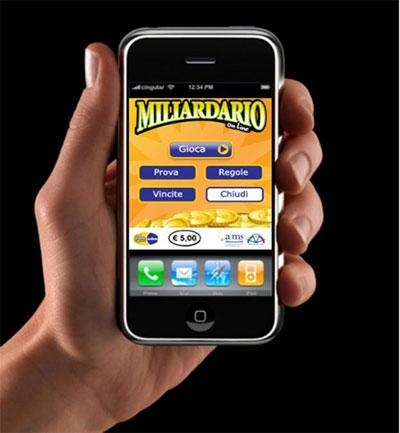

ARGOMENTI TRATTATI
La ludopatia è quando una persona non riesce a smettere di giocare d'azzardo, tipo alle slot, scommesse o gratta e vinci, anche se sa che sta rovinando la propria vita. È una specie di dipendenza, come quella dalle droghe o dall'alcol, solo che invece di una sostanza, è il gioco che ti "frega". Chi ne soffre continua a giocare anche se perde soldi, dice bugie ai familiari, si isola dagli amici e magari si indebita. Uscirne non è facile, ma ci sono psicologi e gruppi che possono aiutare.
Le scommesse sportive sembrano un gioco, tipo "indovina chi vince" e vinci soldi, ma in realtà possono diventare un problema serio. All’inizio magari ci provi per divertirti o per noia, ma poi inizi a puntare sempre di più, pensando di rifarti se perdi. È facile cascarci, soprattutto online dove basta un click. Il problema è che si può diventare dipendenti, come succede con la ludopatia, e non te ne accorgi finché non hai perso tempo, soldi e magari anche la fiducia delle persone vicine. Bisogna stare attenti e non prenderla troppo alla leggera.

I casinò sembrano posti fighi, pieni di luci, giochi e la promessa di vincere un sacco di soldi. Ma la verità è che quasi sempre ci perdi, e tanto. Ti illudi di poter "battere il sistema", ma in realtà è il sistema che vince sempre. Più giochi, più rischi di finire dentro una spirale dove non riesci più a smettere. Anche chi gioca online può finire nei guai, perché è tutto più facile e veloce. Alla fine rischi di rovinarti per inseguire una vincita che magari non arriverà mai.
I gratta e vinci online sembrano una roba innocente: spendi pochi euro, gratti con un click, e magari vinci. Ma il problema è proprio lì: sono veloci, facili e ti illudono che la vincita sia sempre dietro l’angolo. Così inizi a farne uno, poi un altro, e un altro ancora. Anche se perdi, pensi “dai, il prossimo lo vinco”, e intanto i soldi se ne vanno. È un gioco che sembra tranquillo, ma può diventare una vera dipendenza, soprattutto perché nessuno ti vede e puoi giocarci a qualsiasi ora dal telefono.
